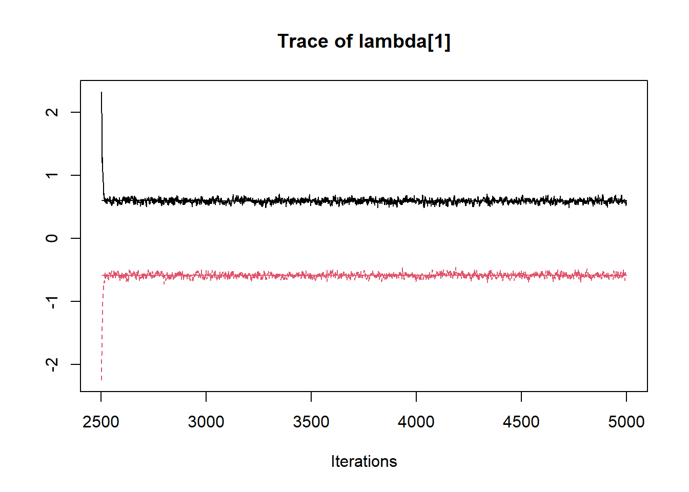
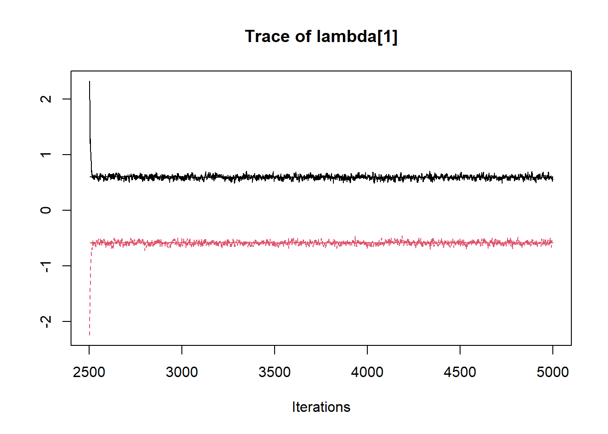
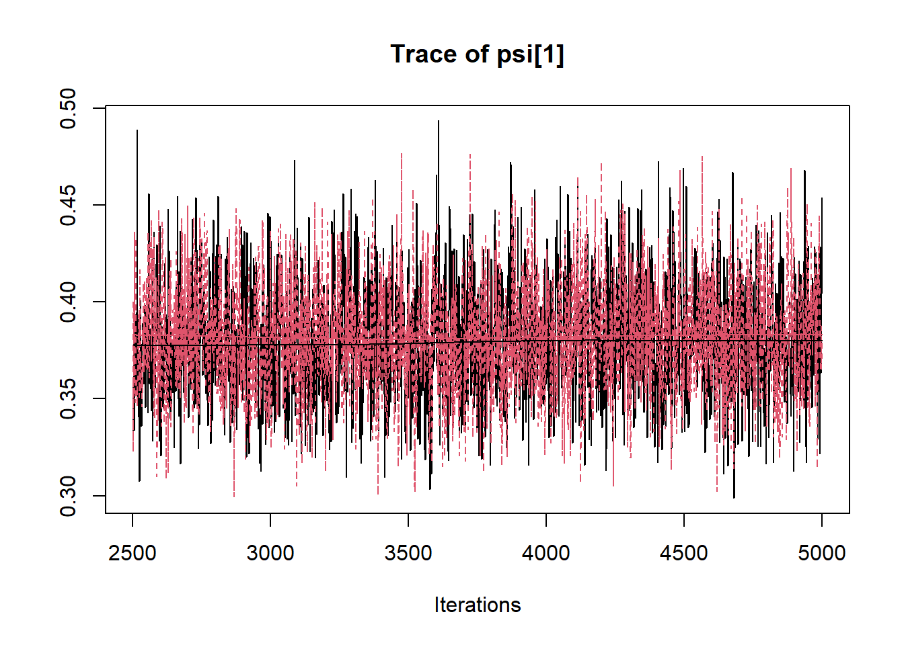
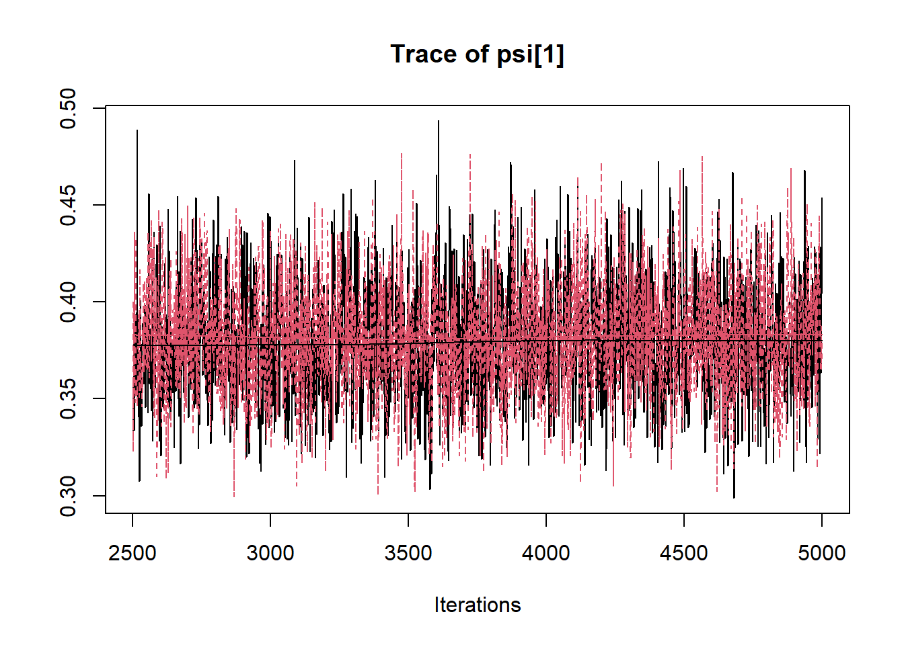

9.8 Indeterminacy in One Factor CFA
# model code
jags.model.cfa.ind <- function(){
######################################################################
# Specify the factor analysis measurement model for the observables
######################################################################
for (i in 1:n){
for(j in 1:J){
mu[i,j] <- tau[j] + ksi[i]*lambda[j] # model implied expectation for each observable
x[i,j] ~ dnorm(mu[i,j], inv.psi[j]) # distribution for each observable
}
}
######################################################################
# Specify the (prior) distribution for the latent variables
######################################################################
for (i in 1:n){
ksi[i] ~ dnorm(kappa, inv.phi) # distribution for the latent variables
}
######################################################################
# Specify the prior distribution for the parameters that govern the latent variables
######################################################################
kappa <- 0 # Mean of factor 1
inv.phi <-1 # Precision of factor 1
phi <- 1/inv.phi # Variance of factor 1
######################################################################
# Specify the prior distribution for the measurement model parameters
######################################################################
for(j in 1:J){
tau[j] ~ dnorm(3, .1) # Intercepts for observables
inv.psi[j] ~ dgamma(5, 10) # Precisions for observables
psi[j] <- 1/inv.psi[j] # Variances for observables
}
for (j in 1:J){
lambda[j] ~ dnorm(1, .1) # prior distribution for the remaining loadings
}
}
# data must be in a list
dat <- read.table("code/CFA-One-Latent-Variable/Data/IIS.dat", header=T)
mydata <- list(
n = 500, J = 5,
x = as.matrix(dat)
)
# initial values
start_values <- list(
list("tau"=c(3.00E+00, 3.00E+00, 3.00E+00, 3.00E+00, 3.00E+00),
"lambda"=c(3.00E+00, 3.00E+00, 3.00E+00, 3.00E+00, 3.00E+00),
"inv.psi"=c(2.00E+00, 2.00E+00, 2.00E+00, 2.00E+00, 2.00E+00)),
list("tau"=c(3.00E+00, 3.00E+00, 3.00E+00, 3.00E+00, 3.00E+00),
"lambda"=c(-3.00E+00, -3.00E+00, -3.00E+00, -3.00E+00, -3.00E+00),
"inv.psi"=c(2.00E+00, 2.00E+00, 2.00E+00, 2.00E+00, 2.00E+00))
)
# vector of all parameters to save
# exclude fixed lambda since it throws an error in
# in the GRB plot
param_save <- c("tau[1]", "lambda[1]", "phi", "psi[1]", "ksi[8]")
# fit model
fit <- jags(
model.file=jags.model.cfa.ind,
data=mydata,
inits=start_values,
parameters.to.save = param_save,
n.iter=5000,
n.burnin = 2500,
n.chains = 2,
n.thin=1,
progress.bar = "none")## Compiling model graph
## Resolving undeclared variables
## Allocating nodes
## Graph information:
## Observed stochastic nodes: 2500
## Unobserved stochastic nodes: 515
## Total graph size: 8029
##
## Initializing model## Inference for Bugs model at "C:/Users/noahp/AppData/Local/Temp/Rtmpk3BvWg/modela6044663d6f.txt", fit using jags,
## 2 chains, each with 5000 iterations (first 2500 discarded)
## n.sims = 5000 iterations saved
## mu.vect sd.vect 2.5% 25% 50% 75% 97.5% Rhat n.eff
## ksi[8] -0.001 1.410 -2.013 -1.353 0.048 1.346 2.047 8.198 2
## lambda[1] 0.001 0.598 -0.655 -0.590 -0.012 0.593 0.658 22.343 2
## phi 1.000 0.000 1.000 1.000 1.000 1.000 1.000 1.000 1
## psi[1] 0.380 0.029 0.328 0.360 0.379 0.399 0.441 1.001 5000
## tau[1] 3.331 0.039 3.254 3.305 3.331 3.357 3.410 1.001 5000
## deviance 3385.453 63.474 3301.173 3355.259 3383.346 3413.256 3473.248 1.001 3300
##
## For each parameter, n.eff is a crude measure of effective sample size,
## and Rhat is the potential scale reduction factor (at convergence, Rhat=1).
##
## DIC info (using the rule, pD = var(deviance)/2)
## pD = 2014.4 and DIC = 5399.9
## DIC is an estimate of expected predictive error (lower deviance is better).
 
 
